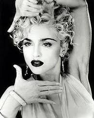

Vogue is a dance style that is characterized by its sharp movements and percision.
There are curently 3 distinct styles of vogue. Although the percise origin of voguing are dsiputed, vogue is inspired by the Ancient Egyptian Hieroglyphs and the famous models of the Vogue Magazine.
Old Way:
Old Way was created sometime before 1990. It is characterized by the formation of lines and other geometric shapes with hands. This style uses the tradional rival system, in which one rival must "pin" the other to win. Pinning involves the trapping of an opponent so that he or she can't execute any more movements. The inspiration for Old Way came from the Egyptian Hieroglyps and various fashion poses done by models.
New Way: New Way was invented after Old Way sometime post-1990. This style uses rigid movements and arm control to mime imaginary shapes to display the danceer's memory. New Way also displays the dancers flexibilty with various poses and moves. Hand and wrists are used in locking-like moves (see tab for more information on this style.)
Vogue Fem: This vogue style is the most recent, created betweeeen 1995-2000. "Fem" is derived from the French word femme, meaning "woman". This style exagerates feminine movements that are influences by ballet, jazz, and modern dance. Voge Fem range in performance from Dramatics (that emphasize stunt, tricks and speed) to soft performances (that show graceful, beautiful, and easy transitions between the five elements.)
Vogue Fem Elements:
Duckwalk-This element recieves its name from its appearance of a duck walking. This move involves squatting in heels and kicking your feet out as you move forward on the beat.
Catwalk or Runway-The catwalk is an exaggerated feminine walk where the legs are crossed, the hips thrust from side to side, and the hands are thrown forward in opposition to the legs.
Hands-In a performance, the hands of the performance often tell a story. The facial expression, the hands, and movement miming show the audience the emotions the dancer is trying to convey.
Floorwork-These moves demonstrate the dancers flexibility and sensuality as they roll, twist, and move on the ground.
Spins and Dips-THis is teh showiest component of vogue. These moves include turns on the beat and drops onto the floor. However, a spin or dip is only done correctly if it is executed during the climax of the beat.